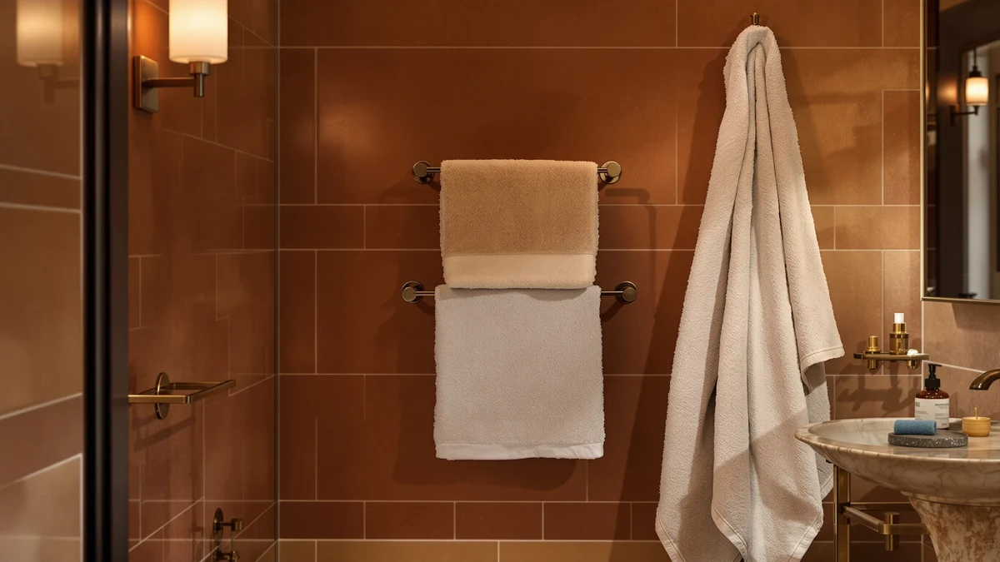

Best How to Install Bathroom Towel Rack (2026) | Best Bath Towels
Prices and picks verified as of August 2026. Independent, reader-supported reviews.


Things to Know Before You Buy
- Height matters: Mount a towel bar about 48 inches from the floor for adults, or around 36 inches in a kids' bathroom. Hand-towel rings sit lower, roughly 20 inches above the vanity.
- Studs are rare at bar height: Most towel bars span 18 to 24 inches, so at least one bracket usually lands on empty drywall. Plan on using wall anchors.
- Match anchors to your wall: Basic plastic anchors work in drywall, but toggle or self-drilling anchors hold far more and resist pull-out from heavy, wet towels.
- Measure twice: Both brackets need to sit level and at the exact spacing stamped on your rack, or the bar will not seat straight.
If you want to know how to install bathroom towel rack hardware that stays put for years, the trick is anchoring it solidly and hanging the bar level at a height that fits the room. A towel rack looks like a five-minute job, but a rushed install pulls loose within weeks and takes a chunk of drywall with it. You can avoid that in about half an hour with basic tools and a few dollars of hardware.
You have two anchoring options, and your wall decides which one you use. When a stud sits behind your chosen spot, you drive screws straight into wood for the strongest possible hold. When it does not, and it usually does not at towel-bar height, you rely on wall anchors rated for the weight of wet towels. We walk through both below, so you finish with a rack that shrugs off a hard yank from a kid grabbing a towel.
What You'll Need
- Supplies: wall anchors rated for wet towels, mounting screws, painter's tape
- Tools: power drill, stud finder, small level, pencil, Phillips screwdriver
Step 1: Choose the height and mark the position
Start by deciding how to install bathroom towel rack brackets at a height that works for the people using it. For a standard adult bathroom, position the center of the bar about 48 inches above the floor. Drop that to roughly 36 inches in a children's bathroom, and set hand-towel rings around 20 inches above the vanity top.
Hold the towel bar against the wall where you want it and step back to check it against your tile lines and the vanity. Once the spot feels right, use a pencil to mark the location of each bracket. A strip of painter's tape under each mark keeps the wall clean and gives your pencil lines a surface that is easy to see and easy to erase later.
Step 2: Find the studs and mark your drill points
Slide a stud finder across the wall through both bracket marks and note where it signals wood. Studs sit 16 or 24 inches apart on center in most homes, so at towel-bar width you might catch one bracket on a stud and miss the other. Mark any stud you find, because a screw into wood beats any anchor.
Now hold each bracket base against its mark, check it with a small level, and pencil in the screw holes through the bracket's mounting plate. Getting both brackets at the same height here is the one step that decides whether your finished bathroom towel rack hangs straight. Measure the distance between your two hole sets and confirm it matches the bar length before you drill anything.
Step 3: Drill pilot holes and set the anchors
Fit your drill with a bit sized to your anchors, usually about 1/4 inch, and drill a hole at each pencil mark. Where a mark lands on a stud, switch to a smaller bit that matches your screw shank so the wood grips tightly. Keep the drill straight and level so each hole runs square into the wall.
Tap a wall anchor into every hole that hit hollow drywall until the collar sits flush with the surface. This is the part that actually carries the load, so choose anchors rated well above the weight of a stack of wet towels. When you install a bathroom towel rack on drywall alone, self-drilling or toggle anchors give you the pull-out resistance that cheap plastic sleeves cannot match.
Step 4: Fasten the mounting brackets
Line up the first bracket base over its holes and drive the screws through the plate into the anchors or the stud. Snug them down firmly, but stop as soon as the base pulls tight against the wall. Overtightening into a drywall anchor strips it and ruins your hold.
Repeat with the second bracket, then lay your level across both bases to confirm they still sit even. A bracket that shifted a hair during tightening throws the whole bar off, and you will notice the slope every time you walk in. Fix it now, while the screws still back out easily, so the bathroom towel rack ends up dead level.
Step 5: Attach the bar and test the hold
Most towel bars slide onto the brackets and lock with a small set screw underneath, usually tightened with a tiny hex key from the package. Seat the bar fully on both brackets, then turn each set screw until the bar stops rotating. If your rack uses a snap-on cover instead, press it on until it clicks.
Give the finished bar a firm downward tug, the same force a loaded towel and a grabbing hand apply. It should not budge or tilt. When you install a bathroom towel rack this way, a solid pull test tells you the anchors are seated and the job will last. Peel off the painter's tape, wipe away your pencil marks, and hang your towels.
Common Mistakes to Avoid
The mistake that ruins most installs is skipping the stud finder and trusting a plastic anchor to do all the work. A single dry towel weighs little, but a soaked bath towel plus the yank of someone drying off puts real force on those screws. Reach for toggle or self-drilling anchors when no stud is available, and your bathroom towel rack will hold for years instead of weeks.
Rushing the level check causes the second common failure. You mount the first bracket, eyeball the second, and end up with a bar that visibly slopes. Lay a level across both bases before you tighten the final screws, and correct any drift while the holes are still fresh.
People also drill holes too large for their anchors. When the hole is oversized, the anchor spins in place and never grips, so match your drill bit to the anchor body, not the screw. Test the fit on a scrap or a hidden spot if you are unsure.
Finally, do not mount the bar too low. A rack at 30 inches drags long towels onto the floor and looks cramped against the vanity. Stick to 48 inches for adults, measure the spacing stamped on your hardware, and you sidestep the errors that send people back to the wall with a tub of spackle a month later.
Our Top Picks
A secure rack only earns its keep when it holds towels worth reaching for. These three picks pair well with a fresh install, whether you want quick-drying waffle weave, an everyday value set, or a striped upgrade that dresses up the wall.

Editor’s Pick
Jacquotha Waffle Bath Towels 2-Piece
The waffle weave dries fast and stays light on the bar, so your newly mounted rack never sags under a soaked towel. A tight, textured set that looks good folded in half over the rail.
$36.95
Check Price on Amazon
Best Value
Cleanbear Bath Towels Soft Shower
You get soft, absorbent everyday towels at a price that lets you buy enough to fill the rack. A sensible choice for a family bathroom where towels cycle through the wash constantly.
$29.99
Check Price on Amazon
Premium Choice
Jacquotha Black and Ivory Striped
The black and ivory stripe turns a plain towel bar into something you actually notice. Slightly thicker than the waffle set, so leave a bit more clearance between brackets if you fold these double.
$33.43
Check Price on AmazonFrequently Asked Questions
How high should a bathroom towel rack be installed?
Mount the center of a standard towel bar about 48 inches above the floor for adults. Drop it to around 36 inches in a kids' bathroom, and set hand-towel rings roughly 20 inches above the vanity. Adjust for the height of the people who use the room most.
Do I need to hit a stud to install a towel rack?
No, and you usually cannot at towel-bar width, since brackets rarely line up with studs 16 inches apart. Hit a stud when you can for the strongest hold, but rated wall anchors carry a towel bar safely when you install it on drywall alone.
What size drill bit do I need for wall anchors?
Match the bit to the anchor body rather than the screw. Most standard drywall anchors call for a 1/4-inch bit, but check the packaging, because an oversized hole lets the anchor spin instead of grip.
Can I install a towel rack without drilling?
Yes. Adhesive-mounted towel bars skip the drill and work on tile or painted drywall, though they hold less weight and can loosen in a steamy bathroom. For a heavy daily-use rack, drilling and anchoring still gives the most reliable result.
How much weight can a towel rack hold?
A properly anchored towel bar handles 15 to 20 pounds, far more than wet towels weigh. The limit comes from the anchor, not the bar, so quality toggle or self-drilling anchors matter more than the hardware itself.
Verdict
Learning how to install a bathroom towel rack comes down to patience at two points: finding your anchoring, and checking your level. Take the time to run a stud finder, pick anchors rated well above the weight of wet towels, and confirm both brackets sit even before the final screws go in. Do that, and a job that scares people into calling a handyman takes about 30 minutes and 15 dollars in hardware. The bar will then shrug off years of daily tugs without a wobble.
Once the rack is solid, load it with towels that match the effort you put into the wall. The Jacquotha Waffle Bath Towels stay light and dry fast, so your fresh install never fights a heavy, sagging load. Pair a careful mount with the right towels and you get a bathroom detail that looks intentional and holds up, which is the whole point of doing it yourself instead of settling for a rack that rips loose in a month.